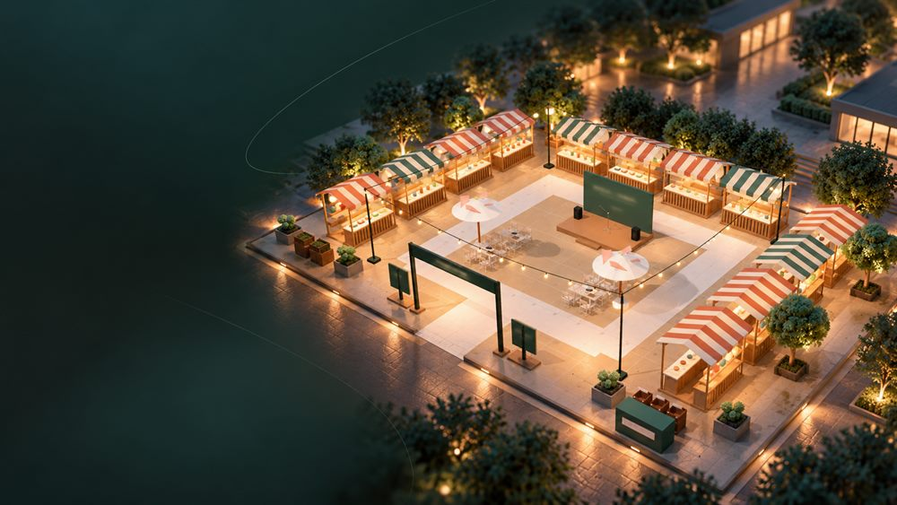
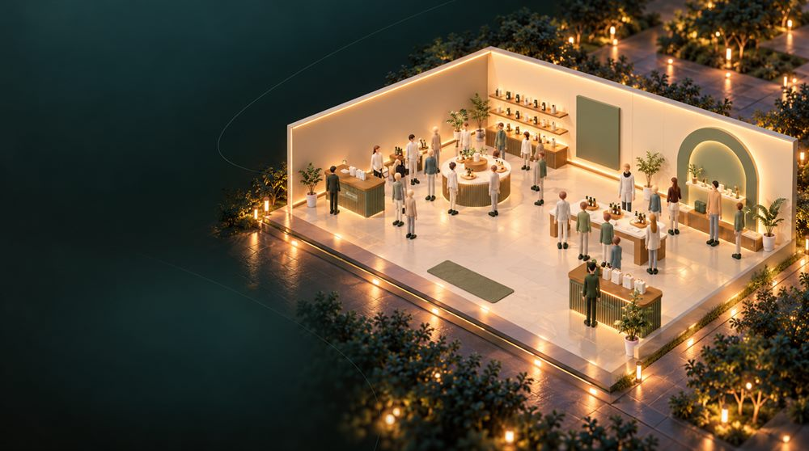
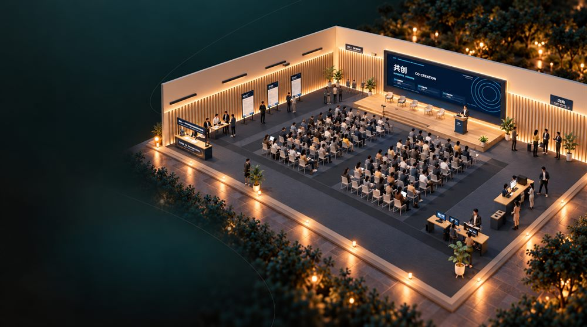
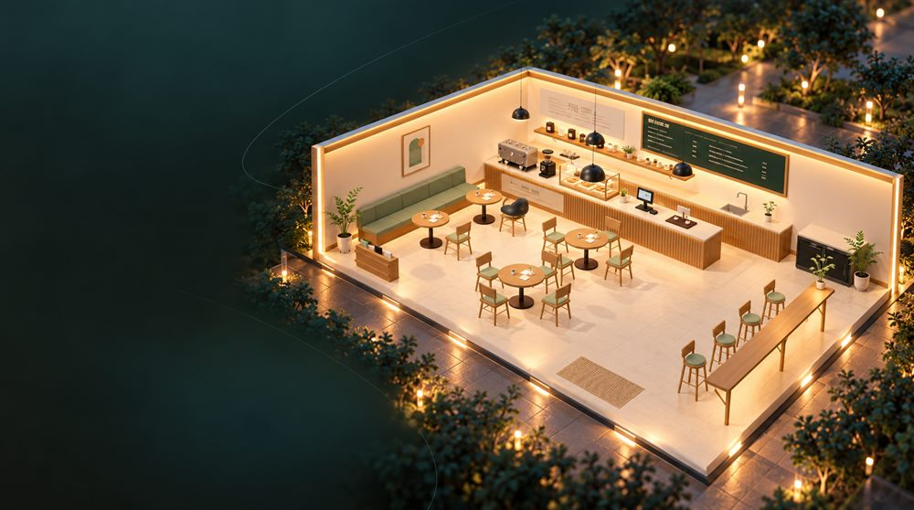

浏览场地布置
按活动类型和地区，找可以参考的场地图。
灵感中心体育馆
一个空间，不止一种可能。
先看见，再决定。
幕景® 把场地照片变成能一起改的三维场景：让场地方、搭建方、客户看同一份东西，不用靠嘴形容，也不用再手绘草图。
按活动类型和地区，找可以参考的场地图。
灵感中心在上海世博展览馆试排等候区和入场导视。
查看 WAIC 演练玉泉鱼跃 · 鱼乐园长廊
以玉泉主池和鱼乐园长廊为参照，试排展台、停留区和换花路线。
已放对象
正在载入卫星影像…
影像元数据 。定位小地图边界来自 DataV.GeoAtlas。青色标出既有地物或场馆轮廓。活动占地以当届资料为准。尺寸为地图估算，布置可导出为 GeoJSON。临时改动保留至本页关闭或刷新。
幕景策划演示。馆内展位、廊下净宽与施工尺寸须以当届图纸及现场测量为准。
从校园活动、品牌快闪到展览空间，不同的团队用它更快地实现想法。

把现场照片丢进去，十分钟就有一个能坐下来讨论的布置。

客户不用装软件，打开链接就能看清桌椅往哪摆。

以前要画三版草图才能讲清楚，现在一份三维场景就对了。

场地方、搭建方各看一遍，争议全在图上说清楚。
在上海世博展览馆的实景上，切换工具看布置怎么变化。
从馆外现状开始圈画布置区，馆内展位以当届图纸为准。
从场地照片到能继续编辑的三维方案，产品、前后端与三维渲染都在同一个仓库里迭代。想法、需求或你手上的真实场地，欢迎直接写信给我们。
为相聚，留一方空间